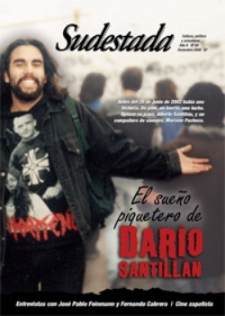

Buscar
Darío, ahora, entonces.
Edición N° 85
Diciembre 2009
Revista bimensual
Comprar edición impresaSumario
- El sueño piquetero de Darío Santillán
- Darío, ahora, entonces.
- "El fondo de mi tristeza es la finitud"
- "Ser músico en Uruguay es dificilísimo"
- "El zapatismo es revolucionario"
- La historia de Sólo Fútbol
Compartir Articulo
Tanto tiempo ha pasado, tanto vértigo apurando los días y las variables se parecen tanto. Resulta increíble pensarlo: allá por 2001, cuando Sudestada aún era un proyecto, los movimientos de trabajadores desocupados ganaban la calle, multiplicaban debates, irrumpían en la escena política, incomodaban al poder con sus reclamos básicos. Hoy, la dinámica del modelo parece repetirse trágicamente: la gestión de gobierno difunde como un éxito nuevos planes sociales que persiguen, como objetivo de máxima, mitigar con asistencialismo a un país con la mitad de su población bajo el índice de pobreza. El plan de mínima es más efectivo: aceitar el aparato clientelar con más combustible estatal y mantener a la mano de obra punteril ocupada y activa en los barrios con vistas a futuros compromisos. De trabajo genuino, ni noticias. La fórmula se parece demasiado a la de principios de década, la que acentuó la exclusión y el desempleo: más asistencialismo, menos fuentes de trabajo.
La diferencia es posible hallarla a la hora de analizar el papel de la gestión con el llamado "piqueterismo": la operación consistió en utilizar los planes y subsidios como alfiles para fragmentar primero y cooptar después. De ese modo, el "clima social" caía en una conveniente meseta mientras algunos optaban por sumarse a proyectos ajenos como administradores de la miseria, compitiendo y, en algunos casos, reemplazando en sus funciones a los punteros, muchos con sus mismos métodos y objetivos. Otros, sacando provecho de su capacidad de gestión, manipularon con oportunismo su mínima porción de poder para ofrecerse como "columnas populares" de emprendimientos varios, algunos, con fines electorales y a la cola de figurones con cierta intención de voto.
Continuemos con las similitudes: otra vez, como en 2002 -cuando adjudicaron la muerte de dos compañeros a supuestas "disputas internas entre grupos"-, la prensa se afianza en su papel de "demonizador" de la protesta social y enemigo acérrimo del derecho de huelga. El mensaje, ahora, se combina con altas dosis de noticias vinculadas al delito para generar en el receptor la famosa sensación de "caos". ¿Y la policía? ¿Ha variado en algo su trabajo como brazo ejecutor de los poderosos? ¿No fueron los mismos que asesinaron a Maxi y a Darío los que hace poco reprimieron a los trabajadores de Kraft, los que se ocupan del "trabajo sucio" con Julio López y Luciano Arruga, los que hostigan a los vecinos en los barrios y avanzan a sangre y fuego en cada toma con blindada impunidad? En este contexto, a nadie sorprende que los responsables políticos de los crímenes en la estación Avellaneda sigan hoy en sus cómodos despachos de funcionarios o como francotiradores políticos desde una supuesta "oposición".
¿Quiénes mantuvieron vivos los principios de aquellos años pasados de lucha y resistencia? No hay dudas: los grupos que contaban entonces con un trabajo de base serio, con un proyecto político alternativo (al menos, en ciernes), los que exigieron algo más que las migajas del Estado y reclamaron, desde siempre, trabajo genuino para todos. Hoy esos grupos persisten en su lucha cotidiana, por el mismo sendero que transitaron Darío y Maxi.
Entonces, ahora, muchas cosas no parecen haber cambiado demasiado. El ejemplo de Darío y Maxi exige repetir viejas certezas, con mayores urgencias, como enormes desafíos: la necesidad de trabajo genuino, la búsqueda de unidad entre trabajadores ocupados y desocupados para organizar y amplificar la pelea, la decisión de concebir desde la base un proyecto político real de los trabajadores, independendiente de los aparatos, los oportunistas y los burócratas; que involucre a los jóvenes; que no se olvide nunca del trabajo de Darío en el barrio; que persista en sembrar la memoria de uno de los nuestros hasta que entonces, ahora, germine por fin el país que él mismo soñó algún tiempo atrás.
¡¡¡Nos vemos en marzo!!!
¿Quién nos enseñó a caminar por este sendero años atrás? ¿Alguien, acaso, puede guiar un camino en el que se mezclan sueños, defectos, pasiones? ¿Cuándo comenzó este viaje? ¿Qué hay detrás de estas páginas que cada día impulsan a nuevos compañeros a sumarse a la travesía?... Las preguntas se multiplican. La duda, fiel compañera de cada búsqueda, nos alienta a seguir construyendo por estas veredas. Con esta edición nos despedimos de otro año de pleno crecimiento, de abrazos nuevos, de discusiones interminables por mejorar la calidad, de rastrear el alma oculta de las historias menos contadas, de seguir navegando por las aguas de la pasión.
Este año, además, nos confirmó la necesidad vigente en todo el país de escuchar otras voces. El mal llamado interior es un hervidero de ganas por eludir las berretadas que le ofrece la prensa capitalina -reproducida muchas veces en los medios locales-. Más de 50 localidades conocieron nuestra propuesta y se apropiaron de nuestras voces. De Mendoza a Mar del Plata; de Oberá a Trelew; de Choele-Choel a Cosquín, pasando por Resistencia, Río Gallegos y Chajarí, Sudestada recorrió y recorre pacientemente estos caminos dispersos en busca de manos laboriosas que hagan de estas letras un canal de unión y discusión para romper el molde de la mediocridad y la resignación.
Ah, y nos vemos en marzo de 2010...
Comentarios

Sudestada
El colectivo de Revista Sudestada esta integrado por Ignacio Portela, Hugo Montero, Walter Marini, Leandro Albani, Martín Latorraca, Pablo Fernández y Repo Bandini.
Articulos más vistos


LIBRERÍA SUDESTADA

Colección infantil

Distribuidora de Libros

Suscripción

Sudestada en URUGUAY

Otros articulos de esta edición
La historia de Sólo Fútbol
Diez años atrás dejaba de existir la única revista que se dedicó a cubrir todas las categorías del fútbol argentino. ...
El sueño piquetero de Darío Santillán
En pocos años, un simple pibe de barrio atormentado por las injusticias sociales encarna el sueño de otras generaciones. ¿Qué ...
"El zapatismo es revolucionario"
En esta época todo transcurre acelerado, se da vuelta la página o se cambia de canal y se olvida pronto. ...
"Ser músico en Uruguay es dificilísimo"
El prestigioso músico uruguayo charló con Sudestada sobre su extensa carrera y su desembarco definitivo en Argentina. De la calificación ...
"El fondo de mi tristeza es la finitud"
La obra apasionada de Feinmann, sus novelas, artículos, ensayos y piezas teatrales, aguijonean la historia argentina con el filo de ...